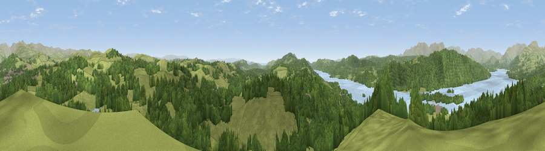

Brant Fell
#3966 in England · top 21% of its area beats it · near Bowness on WindermereThe view, rendered

A 360° render of this exact spot computed from the terrain model, tree cover and land cover — summer colours, afternoon light, calibrated against photographs of famous viewpoints. Real trees, hedges and buildings will differ in detail.
The panorama
Grey silhouette: terrain skyline in each direction (720 bearings, Earth curvature and refraction included). Dashed green: skyline with trees (+15 m) and buildings (+8 m) as obstacles. Blue strip: how far the ground is visible on each bearing.
Where the view opens
Wedge length = distance to the farthest visible ground on that bearing (vegetation-aware). Rings at 10, 25 and 50 km.
What fills the view
44% woodland · 43% grassland · 11% water · 2% built-up
Angular shares of the visible panorama (visual magnitude), not map area. Landscape diversity 0.46 (0–1 Shannon).
Key numbers
More beautiful places nearby
The staircase of upgrades: each row has a higher view potential than everything closer. Driving times are estimates from straight-line distance, calibrated against real road routing — check an actual route before setting out.
| Place | Direction | Drive | Score |
|---|---|---|---|
| Viewpoint near Far Sawrey | W · 3 km | ~7 min | 76.0 |
| Claife Heights | WNW · 3 km | ~7 min | 79.0 |
| Viewpoint near Finsthwaite | SSW · 7 km | ~15 min | 84.7 |
| Viewpoint near Finsthwaite | SSW · 8 km | ~16 min | 90.3 |
| The Knoll | S · 408 km | ~389 min | 91.0 |
54.35721, -2.91071 · source: osm peak · position refined by local search. Computed location — check access rights before visiting.